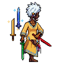

RILEY · SPRITE DRAFT · NOT APPLIED TO GAME
The body study, dressed as Riley
Original Riley

New sprite draft

128 × 128 pixels. Enlarged without smoothing.
Not finished: the new bent-arm silhouette is visible, but this generated pass omitted the held red sword and shortened the exposed neck. Only the green, blue and gold blades are present. The face and embroidery are reinterpreted rather than exact original pixels. This is the actual output, not an approved replacement.
Live Riley and animations remain unchanged. This image edit cost 10 generations.